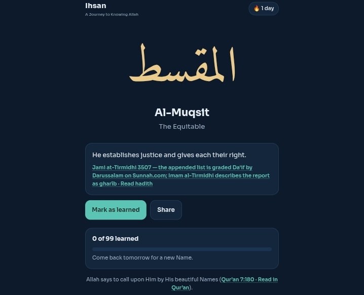
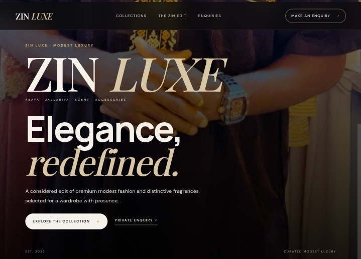

DIGITAL INNOVATION / PROJECTS & EXPERIMENTS
Exploring ideas.
Building useful solutions.
A selection of digital products, platforms and experiments developed across different problem spaces. These projects reflect practical building, testing and continuous improvement—not invented client results.
PROJECTS & EXPERIENCE
From practical tools to digital platforms.
Explore a live product where available, or view the project repository for work that is still being developed or documented.

OBA AgroTech
A digital home for practical poultry-farming tools, guidance and farm-focused resources.
Explore live project ↗
ØBΛ AI Trader
An AI-assisted trading research and paper-trading platform built around analysis and risk awareness.
Explore live project ↗
OBA Downloader
A multi-platform media downloader designed to make saving supported public content straightforward.
Explore live project ↗
OBA Farm OS
A poultry farm-management experience for tracking flock performance and daily operations.
Explore OBA AgroTech ↗
Ihsan
A faith-oriented digital experience built to make beneficial learning and resources easier to access.
View project repository ↗
Zin Luxe
A visual brand experience and digital storefront.
Visit zinluxe.store ↗Project screenshots are previews. Live availability and features may evolve as products are developed.
YOUR IDEA NEXT
Have something worth building?
Tell us what you have in mind. Let's discuss the problem, the right solution and a practical way forward.